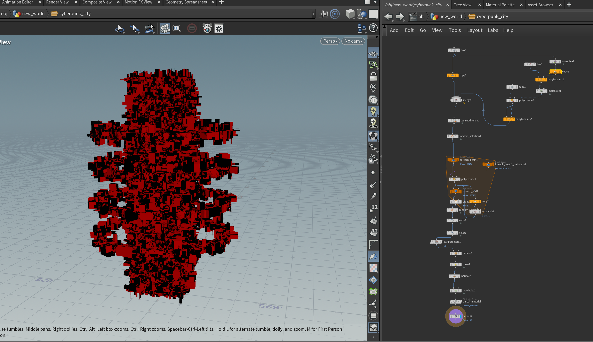
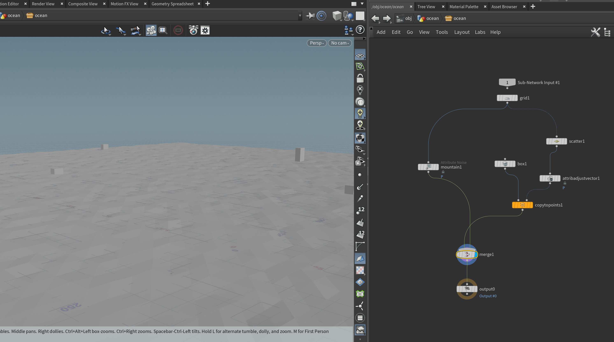
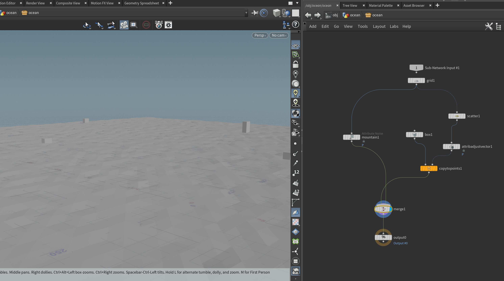
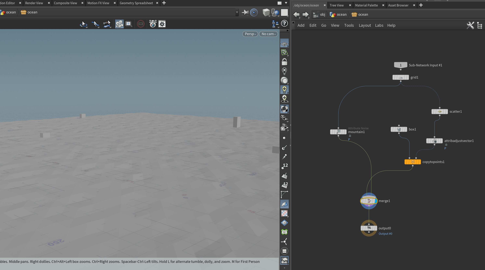
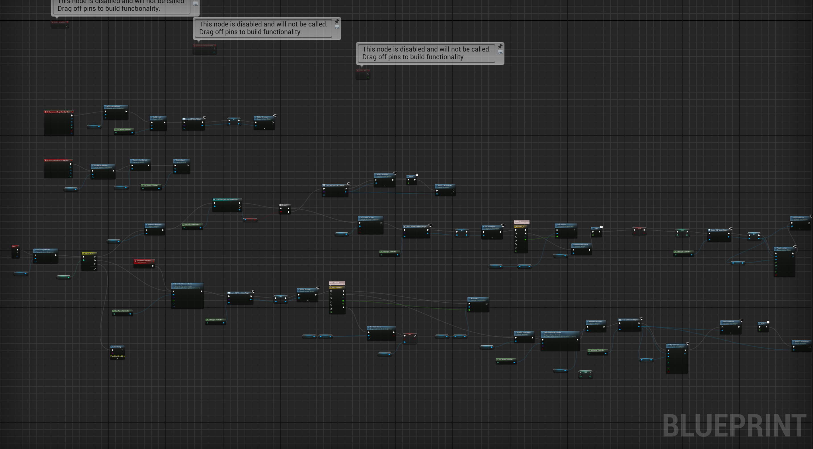
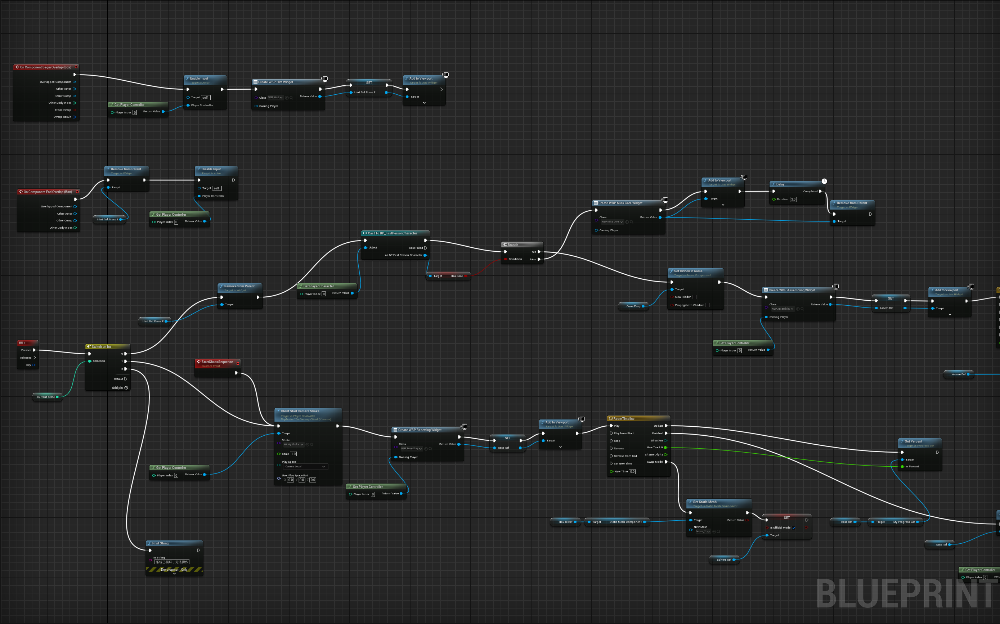
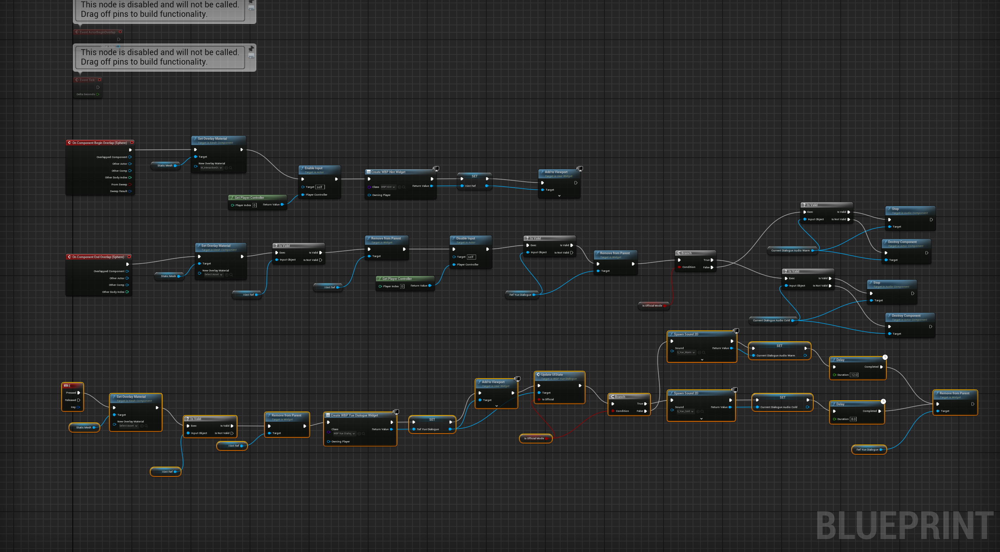
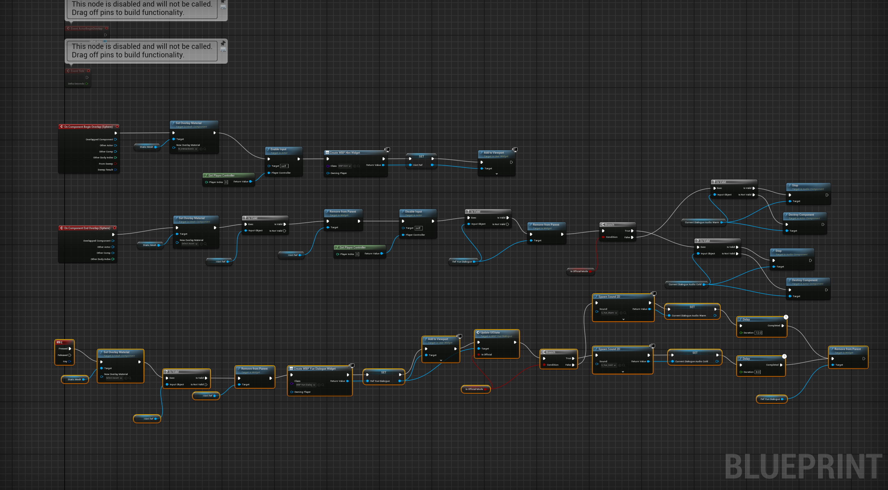
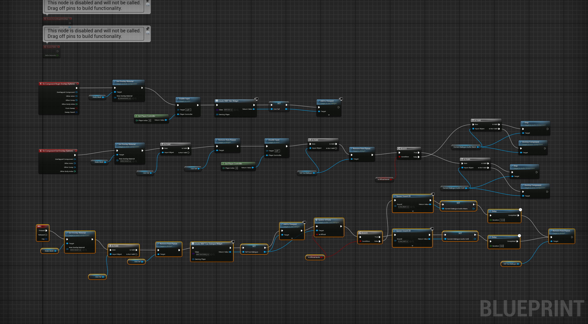

07. TECHNICAL ARCHITECTURE
The technical vertical slice is powered by a dual-pipeline workflow: Procedural Generation for asset scalability and Event-Driven Logic for narrative interactivity.
SIDEFX HOUDINI
PROCEDURAL HDA

 


Procedural Cyber Cityscape
- The technical vertical slice environment is built with three simple HDAs.
- They generate the distant cyberpunk city, the flooded remains of the old world, and a shelter that can visually break down over time.
- This approach makes it easier to test narrative changes without rebuilding the environment.
UNREAL ENGINE 5
BLUEPRINT LOGIC


 


Context-Sensitive System
- The player interacts with objects by moving close and pressing a key.
- Different objects respond with different UI messages, sounds, and visual changes.
- As the player progresses, the environment and Yue’s responses gradually change, showing the system becoming less stable.